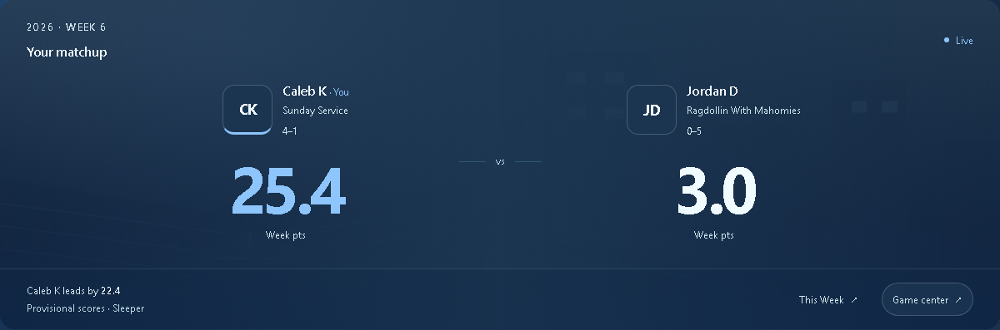
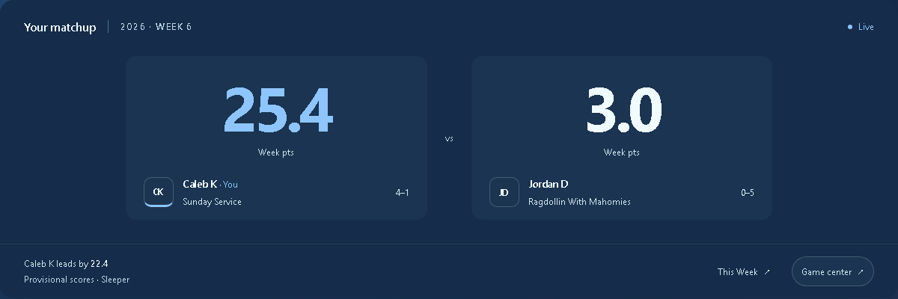

Fantasy Home · Matchup polish
Two finishes for your matchup.
Your approved clubhouse layout, with more considered team identities, score typography, and surfaces. Both start in your Snow palette.

A · Recommended
Banner duel
Team artwork fades into a layered surface. Larger identities stay connected to their scores.
Explore A
B
Clean broadcast
Bold score typography and quiet team panels give the numbers a more deliberate place.
Explore BOn your phone
Static previews · sample league data and artwork · not shipped